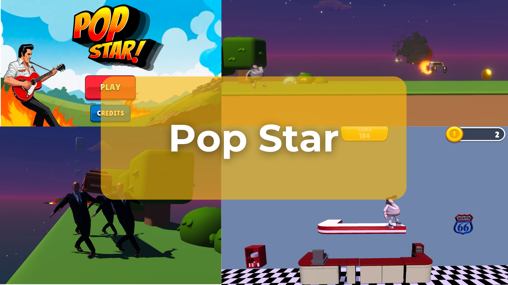

GLOBAL GAME JAM 2024
Pop Star.
Rock-N-Roll, a 1950s vibe and a playful twist on the platformer.

About the project
Pop Star is a game jam project set in a humorous, twisted Rock-N-Roll world. It plays with the conventions and seriousness of classic platformers through parody.
Project notes
The creative direction combines a 1950s-inspired setting with comedy and platforming. Developed for Global Game Jam 2024, it explores how a strong theme can shape a short playable experience.